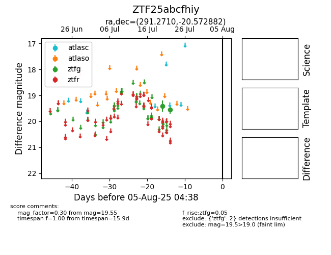

Target ZTF25abcfhiy at 2025-08-05 04:38, see:
FINK: fink-portal.org/ZTF25abcfhiy
Lasair: lasair-ztf.lsst.ac.uk/objects/ZTF25abcfhiy
ALeRCE: alerce.online/object/ZTF25abcfhiy
alt names
ZTF25abcfhiy (ztf,fink)
coordinates:
equatorial (ra, dec) = (291.2710,-20.57288)
galactic (l, b) = (17.8091,-16.38666)
photometry
last ztfg=19.55
2 ztfg detections
